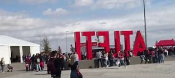

アトレティコ・マドリードの本拠地、ワンダ・メトロポリターノでの観戦体験を詳しく紹介します。
 ワンダ・メトロポリターノの外観
スタジアムの雰囲気
ワンダ・メトロポリターノは、近代的なデザインと熱狂的なファンで知られるスタジアムです。試合当日は、赤と白のチームカラーでスタジアム全体が彩られます。
- アクセス: スタジアムは地下鉄で簡単にアクセス可能です。
- ファンの熱気: 試合前から応援歌が響き渡り、ファンの熱気が伝わってきます。
観戦のポイント
- チケットの購入
チケットは公式サイトで事前に購入するのがおすすめです。 - スタジアム周辺の楽しみ
試合前にスタジアム周辺で軽食やグッズを楽しむことができます。 - 混雑を避ける工夫
試合後は混雑が予想されるため、少し時間を置いてから移動するのがおすすめです。
アトレティコ・マドリードの試合は、サッカーファンにとって特別な体験です。ぜひマドリードを訪れた際には、ワンダ・メトロポリターノでの観戦を楽しんでください！